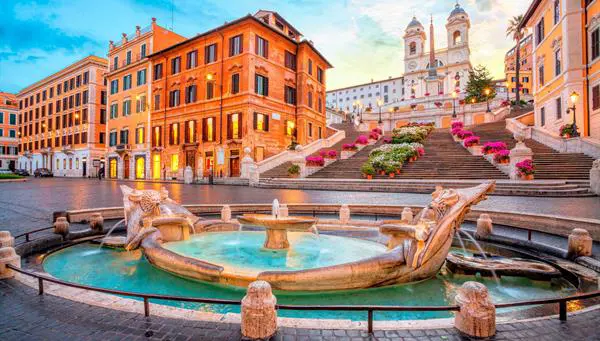
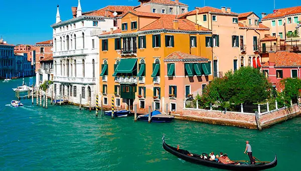
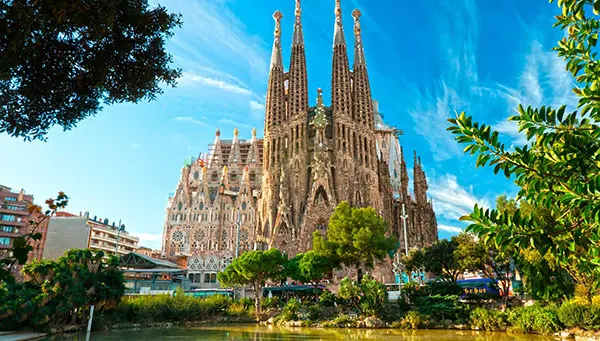

Bem-vindo a EuroTour
Sobre nós
EuroTour é um site que ajuda você a planejar sua viagem para a Europa, desde a compra das passagens, até a visita aos pontos turísticos mais importantes de cada região!
Roma
Roma, a capital da Itália, é uma cidade cosmopolita, enorme, com quase 3.000 anos de arte, arquitetura e cultura influentes no mundo todo e à mostra. Ruínas antigas como o Fórum e o Coliseu evocam o poder do antigo Império Romano. A Cidade do Vaticano, sede da Igreja Católica Romana, tem a Basílica de São Pedro e os museus do Vaticano, que abrigam obras-primas como os afrescos da Capela Sistina de Michelângelo.
Veneza
Veneza, a capital da região de Vêneto, no norte da Itália, é formada por mais de 100 pequenas ilhas em uma lagoa no Mar Adriático. A cidade não tem estradas, apenas canais (como a via Grand Canal), repletos de palácios góticos e renascentistas. Na praça central, Piazza San Marco, ficam a Basílica de São Marcos, coberta de mosaicos bizantinos, e o campanário, com vista para os telhados vermelhos da cidade.
Barcelona
Barcelona, capital cosmopolita da região da Catalunha na Espanha, é conhecida pela sua arte e arquitetura. A fantástica igreja da Sagrada Família e outros monumentos modernistas projetados por Antoni Gaudí marcam a cidade. O Museu Picasso e a Fundação Joan Miró expõem a arte moderna dos artistas homônimos. O MUHBA, museu sobre a história da cidade, apresenta vários sítios arqueológicos romanos.